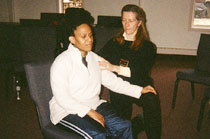

| Individual Sessions |
Martha Eddy and other movement professionals at CKE are available to conduct individual evaluations or provide on-going intervention. Each professional (developmental movement therapists, educational consultants, learning specialists, occupational therapists, and somatic movement educators) at CKE works with people of all ages on a host of issues relating to the body or the mind. Through movement, touch and dialogue personal strengths are supported to bring out the best of the mind, the body and its integration. CKE services incorporate movement and body awareness, focus on wellness, and support life enhancement. Goals are met through a team approach and via communication and interaction with the whole family as is possible. Innovative and holistic methods contribute to improvement in attention, balance, coordination, development, memory, motivation, perceptual alertness, performance, and sequencing. Services for Individuals: Infants, Children & Adults
Academic Achievement Tutoring using Multi-sensory and Creative Arts Approaches: Highly skilled tutors integrate individualized whole body activities selected to meet the underlying neuro-developmental and perceptual needs of the learner that support academic improvement. Tutoring methods are tailored for the unique learning styles of each student and include art, music, games and experiential learning to achieve academic goals. These expert learning specialists are trained in art, music or expressive movement and body awareness, as well as education and pedagogy. Body Awareness and Exercise Programming for Health: Addressing health challenges from bulimia to stroke, CKE develops individualized programs to suit the capabilities and motivational levels of each individual. Sensitive hands-on work is used to relax physical tension and teach new movement patterns. Body Language Coaching: Through careful observation of a professional's movement and non-verbal communication style, strengths are identified that can be cultivated to enhance work capacity as well as make presentations and performance clearer and more dynamic. Developmental Movement Therapy: Perceptual-Motor Interventions: Working with parents and infants or older children CKE combines the use of the senses with movement to affect behavior and feelings (learning and affect) and provides personalized parent-child attunement exercises and infant movement games developed for balance, communication, coordination and tone practiced at CKE and adapted for home. Neuro-developmental Assessment and Advocacy: In-depth and sensitive observations of a child's neurodevelopment status. Assessment of kinesthetic, perceptual, and motor capacity; a review of reports and tests; interfacing with the school team and IEPs; referrals to specialists within the allied health professions; individualized movement and exercise programming; parent advocacy in schools; in-school observations and meetings; evaluation of school-child compatibility. Performing Arts and Athletic Performance: CKE evaluates and recommends individualized programs for athletes, dancers and other performing artists to address body problems and optimize movement skill and expression. Somatic Fitness & Somatic Approaches to Pilates and Yoga: holistic fitness programs for the body and mind. Develop core strength and increase freedom and ease, our somatic fitness trainers listen to you, witness you, and support your progress with compassion. Somatic Movement Therapy Sessions: Therapists facilitate experiences filled with personal attention to help clients learn how to reduce pain, move with greater freedom, and have access to self-awareness for deeper confidence and stronger currents of creativity. Eddy's practice Dynamic Embodiment centers in movement using voice work, exercise, movement exploration, verbal guidance and touch to facilitate movement awareness and expression. Her training as an exercise physiologist, Teacher of Body-Mind Centering, Certified Laban Movement Analyst, Doctor of Education in Movement Science, specialist in dance education and diverse holistic practices provides a wide foundation for her work. Each other staff member of CKE brings a deep training in somatic movement education and therapy integrated with other skills such as acupuncture, fitness, and occupational therapy. Infants (with their care providers) through elders come for sessions to address a wide variety of health and performance issues, and to find more satisfaction in life. Somatic Movement Therapy for Children To learn more about to learn more about Dynamic Embodiment™ visit www.MovingOnCenter.org/DynamicSMTT |